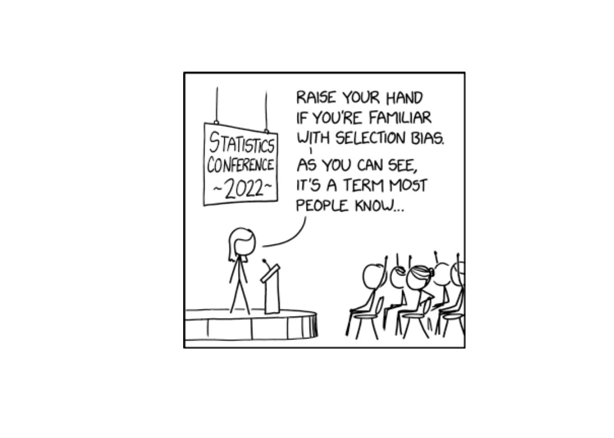
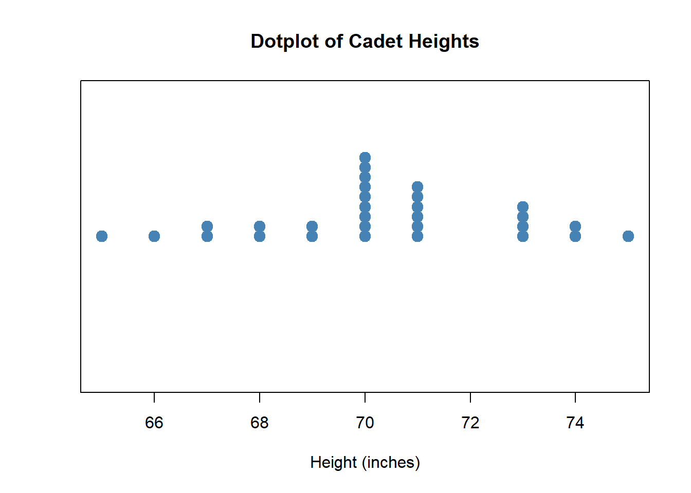
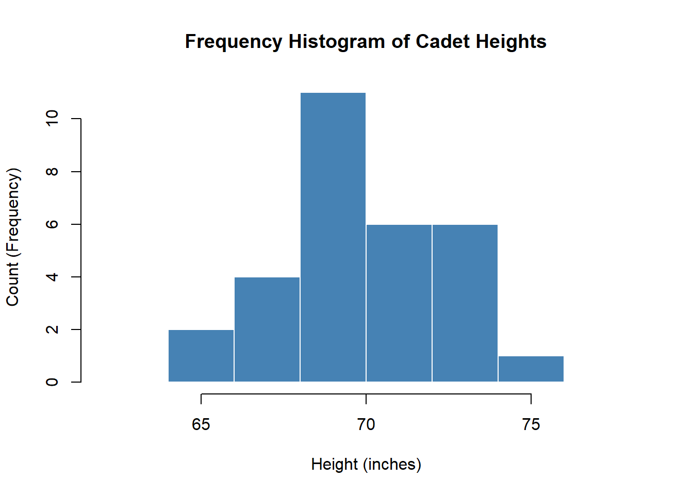
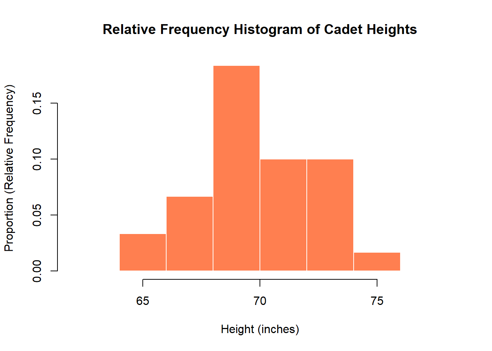
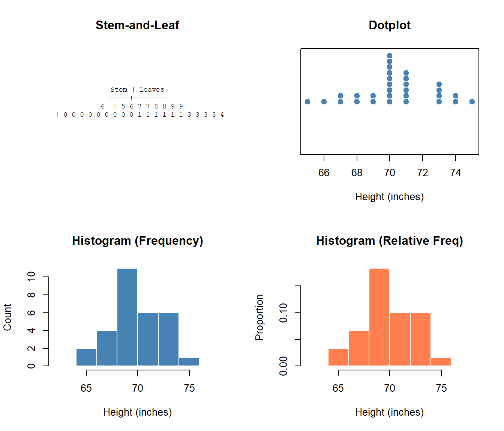

Lesson 2: Sampling & Study Design
Cal
Reese
DMath Basketball!!
Math vs TBD
NotePreviously 6-1
6-2

Admin
Don’t Forget

Mandatory and Important Briefings
A Note on AI
- AI is welcome and encouraged on WebAssign. Screenshot the question… maybe.
- But when WPR time comes - no AI. So use it as a tool for learning, not a crutch.
- WebAssign is 15% of the course. You should get most/all those points.
- Don’t get those points at the peril of your WPR grades - that’s 60% of the course.
- WebAssign is forgiving: 5 tries per sub-question.
- Don’t forget documentation. Just tell me what you did.
Graded Assignments
| Assignment | Points |
|---|---|
| WebAssign Homework | 150 |
| WPR I | 175 |
| WPR II | 175 |
| Exploratory Data Analysis | 25 |
| Tech Report | 125 |
| Project Presentation | 50 |
| TEE | 300 |
| Total | 1000 |
Request a Vantage Account
ImportantAction Required
Before we continue, everyone needs to request an account on Vantage - the Army’s data science platform where we’ll be using R this semester.
- Go to https://vantage.army.mil/
- Click Request Account
- Fill out the required information
- For Commander email, use:
jonathan.l.day3.mil@army.mil - Wait for approval (may take 1-2 days)
We’ll be using Vantage for the project throughout the course.
Lesson 1 Review
The Big Picture
Why do we collect data? Because we want to learn about something bigger than what we can directly observe.
- Population: The entire group we want to learn about
- Sample: The subset we actually observe
- Process: An ongoing mechanism that generates data over time
The whole course builds on this: we use samples to make claims about populations. That’s inference.
Parameters vs Statistics
| Population | Sample | |
|---|---|---|
| What we have | Usually unknown | Observable data |
| Notation | Greek letters (\(\mu\), \(\sigma\), \(\pi\)) | Latin letters (\(\bar{x}\), \(s\), \(\hat{p}\)) |
A statistic estimates a parameter. This is the foundation of Blocks 2 and 3.
Types of Variables
- Categorical: Labels or categories (e.g., branch, major, yes/no)
- Quantitative: Numbers with meaningful arithmetic (e.g., height, GPA, time)
Why does this matter? The type of variable determines:
- How you summarize it (proportions vs means)
- How you visualize it (bar charts vs histograms)
- Which inference method you use (z-test for proportions vs t-test for means)
Lesson 2 Content
Objectives
- Construct and interpret stem-and-leaf displays
- Create and interpret dotplots
- Build and analyze histograms and frequency distributions
- Describe distributions in terms of shape, center, spread, and outliers
Required Reading
Devore, Section 1.2: Pictorial and Tabular Methods in Descriptive Statistics
Why Visualize Data?
Before calculating any numbers, we should look at the data. Visual displays help us:
- Identify the shape of the distribution
- Find a typical value (center)
- See how much variability exists (spread)
- Spot outliers and gaps
- Check for symmetry or skewness
Four Types of Displays
Comparing the Four Display Types
| Display | Description | Best Sample Size | Preserves Exact Values? |
|---|---|---|---|
| Stem-and-leaf | Split each number into stem (leading digits) and leaf (trailing digit) | Small (n < 50) | Yes |
| Dotplot | Place a dot for each observation on a number line; stack repeated values | Small (n < 30) | Yes |
| Histogram (Frequency) | Divide range into bins; bar height = count in each bin | Any size | No |
| Histogram (Relative Freq) | Divide range into bins; bar height = proportion in each bin | Any size | No |
What Can You Learn From Each?
| Display | Shape | Center | Spread | Outliers | Exact Values | Compare Groups |
|---|---|---|---|---|---|---|
| Stem-and-leaf | Yes | Yes | Yes | Yes | Yes | Limited |
| Dotplot | Yes | Yes | Yes | Yes | Yes | Good |
| Histogram (Frequency) | Yes | Approximate | Yes | Yes | No | Difficult |
| Histogram (Relative Freq) | Yes | Approximate | Yes | Yes | No | Best |
When to Use Each Display
| Display | Use When… | Example |
|---|---|---|
| Stem-and-leaf | Small dataset, want to preserve exact values | Quiz scores for your 18-person section |
| Dotplot | Small dataset with repeated values | Number of absences per cadet |
| Histogram (Frequency) | Larger dataset, want raw counts per bin | APFT scores for an entire battalion |
| Histogram (Relative Freq) | Comparing groups of different sizes | Run times: Company A (120 soldiers) vs Company B (85 soldiers) |
Describing Distributions
The Four Key Features
When describing any distribution, always address:
- Shape: Symmetric, skewed left, skewed right, unimodal, bimodal?
- Center: Where is the “typical” value?
- Spread: How much variability is there?
- Outliers: Any unusual observations?
TipMemory Aid
S-C-S-O: Shape, Center, Spread, Outliers
Shape: Symmetry and Skewness
| Shape | Description | Relationship |
|---|---|---|
| Symmetric | Left and right sides are mirror images | Mean ≈ Median |
| Skewed Right | Long tail extends to the right | Mean > Median |
| Skewed Left | Long tail extends to the left | Mean < Median |
Examples:
- Skewed right: Income, home prices
- Skewed left: Age at retirement, exam scores with a ceiling
Shape: Modality
- Unimodal: One peak (most common)
- Bimodal: Two distinct peaks (may indicate two subgroups)
- Multimodal: Multiple peaks
- Uniform: Roughly flat, no clear peak
Identifying Outliers
WarningOutlier
An observation that falls far from the rest of the data. Could indicate:
- Data entry error
- Measurement error
- A genuinely unusual observation
- A different population
Always investigate outliers - don’t automatically remove them!
Example: Cadet Heights
Let’s use simulated height data for 30 cadets to demonstrate all four display types.
Heights (inches): 65, 66, 67, 67, 68, 68, 69, 69, 70, 70, 70, 70, 70, 70, 70, 70, 70, 71, 71, 71, 71, 71, 71, 73, 73, 73, 73, 74, 74, 75Stem-and-Leaf Display
Stem | Leaves-----+-------- 6 | 5 6 7 7 8 8 9 9
7 | 0 0 0 0 0 0 0 0 0 1 1 1 1 1 1 3 3 3 3 4 4 5Reading it: The row “6 | 5 6 7 7 8 8 9 9” represents heights of 65, 66, 67, 67, 68, 68, 69, 69 inches.
Interpreting with S-C-S-O:
- Shape: Roughly symmetric (similar number of leaves on each stem), unimodal
- Center: The 7 stem has many more leaves, so center is around 70 inches
- Spread: Values range from 65 to 75 inches (range = 10 inches)
- Outliers: No values stand apart from the rest
Unique advantage: We can recover every exact data value! We know there are exactly two cadets who are 67 inches tall.
Dotplot

Interpreting with S-C-S-O:
- Shape: Roughly symmetric with one clear peak (unimodal); dots cluster in the middle
- Center: The tallest stack of dots is at 70 inches - this is our center
- Spread: Dots extend from about 65 to 75 inches
- Outliers: No dots are isolated far from the others
Unique advantage: Easy to see exact values AND repeated values (stacked dots). The height of 70 inches appears 9 times - we can count the dots!
Histogram (Frequency)

Interpreting with S-C-S-O:
- Shape: Roughly symmetric (bars rise then fall), unimodal (one peak)
- Center: Tallest bar is at 70-72 inches, so center is around 70-71
- Spread: Data spans from about 64 to 76 inches
- Outliers: No bars are isolated from the main distribution
Unique advantage: Shows counts - we can say “15 cadets are between 70-72 inches tall.” Good for understanding raw numbers.
Histogram (Relative Frequency)

Interpreting with S-C-S-O:
- Shape: Same as frequency histogram - symmetric, unimodal
- Center: Peak is at 70-72 inches
- Spread: Same range, 64 to 76 inches
- Outliers: None visible
Unique advantage: Shows proportions - we can say “about 50% of cadets are between 70-72 inches tall.” Essential for comparing groups of different sizes (e.g., comparing this section of 30 to another section of 18).
Side-by-Side Comparison

Describing the Cadet Heights Distribution
Using S-C-S-O:
- Shape: Roughly symmetric, unimodal
- Center: Around 70 inches
- Spread: Ranges from about 64 to 76 inches
- Outliers: None obvious
Practice Problem
The following data represents the number of hours cadets studied for a WPR:
3, 5, 4, 8, 6, 5, 12, 4, 5, 7, 6, 5, 4, 6, 5, 3, 5, 6, 4, 5
NoteQuestions
- Create a stem-and-leaf display for this data
- Describe the distribution (shape, center, spread, outliers)
- What is the relative frequency of cadets who studied 5 or more hours?
TipAnswers
- Stem-and-leaf display:
Stem | Leaves
0 | 3 3 4 4 4 4 5 5 5 5 5 5 5 6 6 6 6 7 8
1 | 2Shape: Roughly symmetric with a possible outlier; unimodal Center: Around 5 hours Spread: 3 to 12 hours (range of 9) Outliers: 12 hours appears to be an outlier
Count of values ≥ 5: 13 out of 20 Relative frequency = 13/20 = 0.65 or 65%
Before You Leave
Today
- Stem-and-leaf displays: preserve data while showing shape
- Dotplots: simple visual for small datasets
- Histograms: frequency distributions for larger datasets
- Describing distributions: Shape, Center, Spread, Outliers (S-C-S-O)
Any questions?
Next Lesson
Lesson 3: Measures of Location
- Mean, median, and mode
- Percentiles and quartiles
- Comparing measures of center for different distributions
Upcoming Graded Events
- WebAssign 1.3 - Due before Lesson 3
- Exploratory Data Analysis - Due Lesson 9
- WPR I - Lesson 16